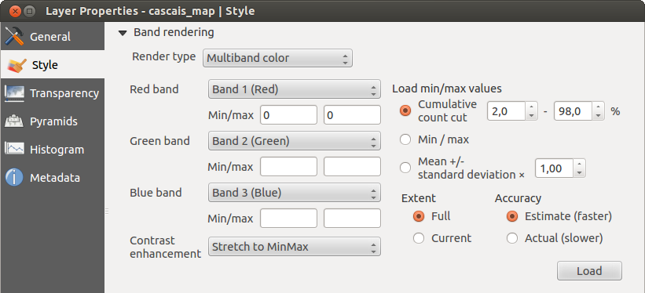
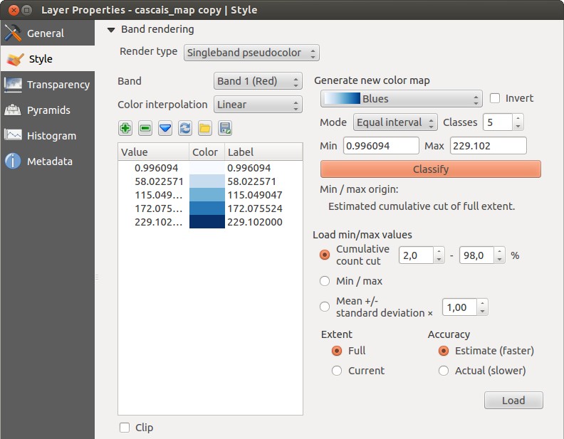
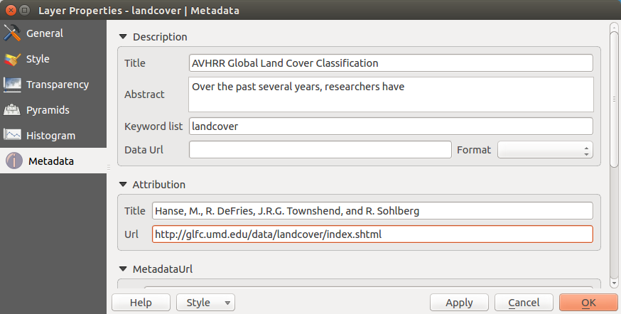

Raster Properties Dialog
To view and set the properties for a raster layer, double click on the layer name in the map legend, or right click on the layer name and choose Properties from the context menu. This will open the Raster Layer Properties dialog (see figure_raster_1).
There are several menus in the dialog:
- General
- Style
- Transparency
- Pyramids
- Histogram
- Metadata
Figure Raster 1:
 Raster Layers Properties Dialog
Raster Layers Properties Dialog
General Menu
Layer Info
The General menu displays basic information about the selected raster, including the layer source path, the display name in the legend (which can be modified), and the number of columns, rows and no-data values of the raster.
Coordinate reference system
Here, you find the coordinate reference system (CRS) information printed as a PROJ.4 string. If this setting is not correct, it can be modified by clicking the [Specify] button.
Scale Dependent visibility
Additionally scale-dependent visibility can be set in this tab. You will need to check the checkbox and set an appropriate scale where your data will be displayed in the map canvas.
At the bottom, you can see a thumbnail of the layer, its legend symbol, and the palette.
Style Menu
Band rendering
KADAS offers four different Render types. The renderer chosen is dependent on the data type.
- Multiband color - if the file comes as a multiband with several bands (e.g., used with a satellite image with several bands)
- Paletted - if a single band file comes with an indexed palette (e.g., used with a digital topographic map)
- Singleband gray - (one band of) the image will be rendered as gray; KADAS will choose this renderer if the file has neither multibands nor an indexed palette nor a continous palette (e.g., used with a shaded relief map)
- Singleband pseudocolor - this renderer is possible for files with a continuous palette, or color map (e.g., used with an elevation map)
Multiband color
With the multiband color renderer, three selected bands from the image will be rendered, each band representing the red, green or blue component that will be used to create a color image. You can choose several Contrast enhancement methods: ‘No enhancement’, ‘Stretch to MinMax’, ‘Stretch and clip to MinMax’ and ‘Clip to min max’.
Figure Raster 2:
 Raster Renderer - Multiband color
This selection offers you a wide range of options to modify the appearance of your raster layer. First of all, you have to get the data range from your image. This can be done by choosing the Extent and pressing [Load]. KADAS can  Estimate (faster) the Min and Max values of the bands or use the
Estimate (faster) the Min and Max values of the bands or use the  Actual (slower) Accuracy.
Actual (slower) Accuracy.
Now you can scale the colors with the help of the Load min/max values section. A lot of images have a few very low and high data. These outliers can be eliminated using the Cumulative count cut setting. The standard data range is set from 2% to 98% of the data values and can be adapted manually. With this setting, the gray character of the image can disappear. With the scaling option Min/max, KADAS creates a color table with all of the data included in the original image (e.g., KADAS creates a color table with 256 values, given the fact that you have 8 bit bands). You can also calculate your color table using the Mean +/- standard deviation x  . Then, only the values within the standard deviation or within multiple standard deviations are considered for the color table. This is useful when you have one or two cells with abnormally high values in a raster grid that are having a negative impact on the rendering of the raster.
. Then, only the values within the standard deviation or within multiple standard deviations are considered for the color table. This is useful when you have one or two cells with abnormally high values in a raster grid that are having a negative impact on the rendering of the raster.
All calculations can also be made for the Current extent.
Tip
Viewing a Single Band of a Multiband Raster
If you want to view a single band of a multiband image (for example, Red), you might think you would set the Green and Blue bands to “Not Set”. But this is not the correct way. To display the Red band, set the image type to ‘Singleband gray’, then select Red as the band to use for Gray.
Paletted
This is the standard render option for singleband files that already include a color table, where each pixel value is assigned to a certain color. In that case, the palette is rendered automatically. If you want to change colors assigned to certain values, just double-click on the color and the Select color dialog appears. Also, in KADAS 2.2. it’s now possible to assign a label to the color values. The label appears in the legend of the raster layer then.
Figure Raster 3:
 Raster Renderer - Paletted
Raster Renderer - Paletted
Contrast enhancement
Note
When adding GRASS rasters, the option Contrast enhancement will always be set automatically to stretch to min max, regardless of if this is set to another value in the KADAS general options.
Singleband gray
This renderer allows you to render a single band layer with a Color gradient: ‘Black to white’ or ‘White to black’. You can define a Min and a Max value by choosing the Extent first and then pressing [Load]. KADAS can Estimate (faster) the Min and Max values of the bands or use the Actual (slower) Accuracy.
Figure Raster 4:
 Raster Renderer - Singleband gray
Raster Renderer - Singleband gray
With the Load min/max values section, scaling of the color table is possible. Outliers can be eliminated using the Cumulative count cut setting. The standard data range is set from 2% to 98% of the data values and can be adapted manually. With this setting, the gray character of the image can disappear. Further settings can be made with Min/max and Mean +/- standard deviation x . While the first one creates a color table with all of the data included in the original image, the second creates a color table that only considers values within the standard deviation or within multiple standard deviations. This is useful when you have one or two cells with abnormally high values in a raster grid that are having a negative impact on the rendering of the raster.
Singleband pseudocolor
This is a render option for single-band files, including a continous palette. You can also create individual color maps for the single bands here.
Figure Raster 5:
 Raster Renderer - Singleband pseudocolor
Three types of color interpolation are available:
- Discrete
- Linear
- Exact
In the left block, the button  Add\ values\ manually adds a value to the individual color table. The button
Add\ values\ manually adds a value to the individual color table. The button  Remove\ selected\ row deletes a value from the individual color table, and the
Remove\ selected\ row deletes a value from the individual color table, and the  Sort\ colormap\ items button sorts the color table according to the pixel values in the value column. Double clicking on the value column lets you insert a specific value. Double clicking on the color column opens the dialog Change color, where you can select a color to apply on that value. Further, you can also add labels for each color, but this value won’t be displayed when you use the identify feature tool. You can also click on the button
Sort\ colormap\ items button sorts the color table according to the pixel values in the value column. Double clicking on the value column lets you insert a specific value. Double clicking on the color column opens the dialog Change color, where you can select a color to apply on that value. Further, you can also add labels for each color, but this value won’t be displayed when you use the identify feature tool. You can also click on the button  Load\ color\ map\ from\ band, which tries to load the table from the band (if it has any). And you can use the buttons
Load\ color\ map\ from\ band, which tries to load the table from the band (if it has any). And you can use the buttons  Load\ color\ map\ from\ file or
Load\ color\ map\ from\ file or  Export\ color\ map\ to\ file to load an existing color table or to save the defined color table for other sessions.
Export\ color\ map\ to\ file to load an existing color table or to save the defined color table for other sessions.
In the right block, Generate new color map allows you to create newly categorized color maps. For the Classification mode  ‘Equal interval’, you only need to select the number of classes and press the button Classify. You can invert the colors of the color map by clicking the
‘Equal interval’, you only need to select the number of classes and press the button Classify. You can invert the colors of the color map by clicking the  Invert checkbox. In the case of the Mode ‘Continous’, KADAS creates classes automatically depending on the Min and Max. Defining Min/Max values can be done with the help of the Load min/max values section. A lot of images have a few very low and high data. These outliers can be eliminated using the Cumulative count cut setting. The standard data range is set from 2% to 98% of the data values and can be adapted manually. With this setting, the gray character of the image can disappear. With the scaling option Min/max, KADAS creates a color table with all of the data included in the original image (e.g., KADAS creates a color table with 256 values, given the fact that you have 8 bit bands). You can also calculate your color table using the Mean +/- standard deviation x . Then, only the values within the standard deviation or within multiple standard deviations are considered for the color table.
Invert checkbox. In the case of the Mode ‘Continous’, KADAS creates classes automatically depending on the Min and Max. Defining Min/Max values can be done with the help of the Load min/max values section. A lot of images have a few very low and high data. These outliers can be eliminated using the Cumulative count cut setting. The standard data range is set from 2% to 98% of the data values and can be adapted manually. With this setting, the gray character of the image can disappear. With the scaling option Min/max, KADAS creates a color table with all of the data included in the original image (e.g., KADAS creates a color table with 256 values, given the fact that you have 8 bit bands). You can also calculate your color table using the Mean +/- standard deviation x . Then, only the values within the standard deviation or within multiple standard deviations are considered for the color table.
Color rendering
For every Band rendering, a Color rendering is possible.
You can also achieve special rendering effects for your raster file(s) using one of the blending modes (see The Vector Properties Dialog).
Further settings can be made in modifiying the Brightness, the Saturation and the Contrast. You can also use a Grayscale option, where you can choose between ‘By lightness’, ‘By luminosity’ and ‘By average’. For one hue in the color table, you can modify the ‘Strength’.
Resampling
The Resampling option makes its appearance when you zoom in and out of an image. Resampling modes can optimize the appearance of the map. They calculate a new gray value matrix through a geometric transformation.
Figure Raster 6:
 Raster Rendering - Resampling
Raster Rendering - Resampling
When applying the ‘Nearest neighbour’ method, the map can have a pixelated structure when zooming in. This appearance can be improved by using the ‘Bilinear’ or ‘Cubic’ method, which cause sharp features to be blurred. The effect is a smoother image. This method can be applied, for instance, to digital topographic raster maps.
Transparency Menu
KADAS has the ability to display each raster layer at a different transparency level. Use the transparency slider  to indicate to what extent the underlying layers (if any) should be visible though the current raster layer. This is very useful if you like to overlay more than one raster layer (e.g., a shaded relief map overlayed by a classified raster map). This will make the look of the map more three dimensional.
to indicate to what extent the underlying layers (if any) should be visible though the current raster layer. This is very useful if you like to overlay more than one raster layer (e.g., a shaded relief map overlayed by a classified raster map). This will make the look of the map more three dimensional.
Additionally, you can enter a raster value that should be treated as NODATA in the Additional no data value menu.
An even more flexible way to customize the transparency can be done in the Custom transparency options section. The transparency of every pixel can be set here.
As an example, we want to set the water of our example raster file landcover.tif to a transparency of 20%. The following steps are neccessary:
- Load the raster file
landcover.tif. - Open the Properties dialog by double-clicking on the raster name in the legend, or by right-clicking and choosing Properties from the pop-up menu.
- Select the Transparency menu.
- From the Transparency band menu, choose ‘None’.
- Click the Add\ values\ manually button. A new row will appear in the pixel list.
- Enter the raster value in the ‘From’ and ‘To’ column (we use 0 here), and adjust the transparency to 20%.
- Press the [Apply] button and have a look at the map.
You can repeat steps 5 and 6 to adjust more values with custom transparency.
As you can see, it is quite easy to set custom transparency, but it can be quite a lot of work. Therefore, you can use the button  Export\ to\ file to save your transparency list to a file. The button Import\ from\ file loads your transparency settings and applies them to the current raster layer.
Export\ to\ file to save your transparency list to a file. The button Import\ from\ file loads your transparency settings and applies them to the current raster layer.
Metadata Menu
The Metadata menu displays a wealth of information about the raster layer, including statistics about each band in the current raster layer. From this menu, entries may be made for the Description, Attribution, MetadataUrl and Properties. In Properties, statistics are gathered on a ‘need to know’ basis, so it may well be that a given layer’s statistics have not yet been collected.
Figure Raster 9:
 Raster Metadata